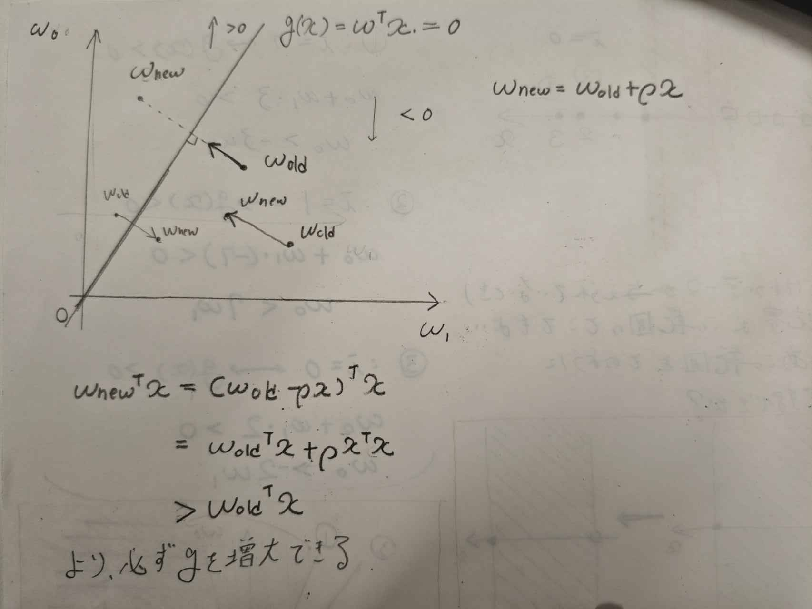
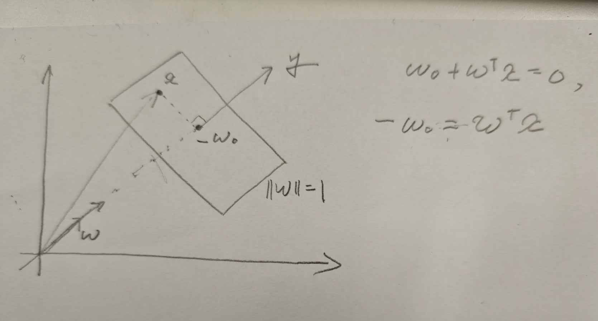
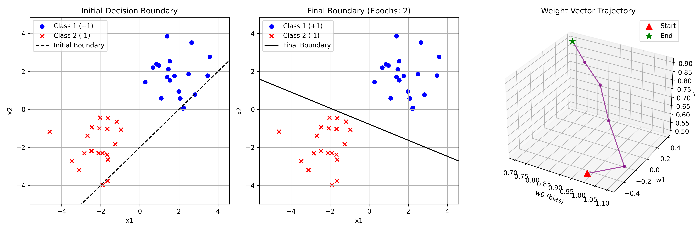
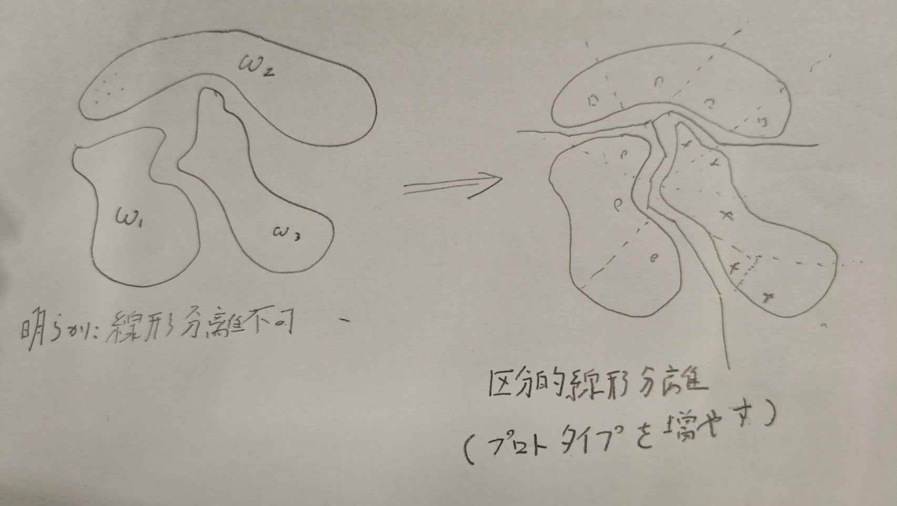

学習と識別関数
はじめに
ここから数式がたくさん出てきます．頑張って勉強していきます．あと前回は図を書くのがめんどくさくて書かなかったですが，今回からは図を多用していこうと思います．日本語で説明するの面倒なので．
学習の必要性
前回識別方法としてNN法を紹介したが，クラス間を分類する決定境界は，プロトタイプを特徴空間上のどの位置に設定するかによって定められる． 上の図のような状況を考えよう．重心をプロトタイプとして選んだ場合正しい分割ができない．プロトタイプを重心からずらす必要がある．だがしかし次元が高くなるにつれて直感的な方法でプロトタイプの位置を決定することはできない．ではどのようにして正しい位置を自動的に求めるのだろうか． それを可能にするのが学習である． 前回書いた識別部設計用に収集されたパターンは，学習パターンなどと呼ばれている．
最近傍決定則と線形識別関数
まずNN法をユークリッド距離で定式化しておこう c個のクラス\omega_1 ,..., \omega_cのプロトタイプとして，それぞれd次元ベクトルp_1, p_2 , ..., p_cを選んだとする．入力パターンをxとするとNN法はxとp_iとのユークリッド距離|x- p_i|を用いて |x - p_i|^2 = (x - p_i)^T(x - p_i) = x^tx - 2 p^T_i x + p_i^Tp_i となる．スカラーを転置しても値が同じになることを利用した． この値が最小となるiを探すわけだが，iについて比較するのでx^txはこの比較においては影響がない．すなわち関数gを g(x) = -\frac 1 2 |p_i|^2 + p^t_i x と定義すれば，NN法は
k = \arg \max_{i =1 ,...,c } g_i(x)
となる．まあg(x)はこれから先の議論で下凸にしたいから-\frac12を掛けているのだろう． ここで話は飛ぶがこのようにxに対して線形な識別関数のことを，線形識別関数とよぶ．表記を簡単にしたいからという動機があるのだろうか． 線形識別関数は一般に g_i(x) = w_{i0} + \sum_j^d w_{ij}x_{j} = w_{i0} + w_i^Tx と書かれる．今回の例だとw_{i0} = - \frac{1}{2}|p_i|^2, w_i = p_iとなる． この入力の線形和と最大値選択からなる識別系は，パーセプトロンと呼ばれる．
パーセプトロンの学習規則
じゃあまず全体パターン集合をXとおく，クラスw_iに属する学習パターンの集合をX_iで表すと，線形判別関数の学習とは，X_iに属するすべてのxに対して g_i(x) > g_j(x) となる重みw_iを決定することである．このような重みが一つでも存在するとき，Xは線形分離可能といい，逆にこのような重みが存在しない場合は線形分離不可能という． 図にもあるように w = w_0 - w_1とすれば， g(x) = w^T(1 , x)^T
と一つの式で判別関数を作れるので便利である． \begin{equation} \left\{ \begin{alignedat}{2} g(x) > 0 (x \in \omega_0)\\ g(x) <0 (x\in \omega_1) \end{alignedat} \right. \end{equation} を満たすような wがまず存在することを示す必要がある． ここで，wの各成分を座標軸とした重み空間を考える． 重み空間では，重みは一つの点に対応する． ここでxが与えられているとき，w^Tx = 0は原点を通る直線（多次元の意味での）となることが分かる．例えば重みがw_0,w_1のみの場合，x =3でx \in \omega_0の場合境界線は w_0 + 3 \times w_1 = 0 \rightarrow w_0 = 3w_`
となり確かに重み空間においては原点を通る直線となることがわかる． これは1点に対する直線なので，n個の点に対してこれの線を引いて領域を描画すれば，wが存在すべき領域を指定することになる．この領域を解領域という．（実際の学習ではこの領域の計算はしない，あくまで概念的な話である．）
パーセプトロンの学習
線形識別関数の重みにを学習によって求める方法について述べよう．重みの決定方法については，パーセプトロンの学習規則が有名である．
- 重みベクトルwの初期値を適当に選択する
- Xの中から学習パターンを一つ選ぶ
- 識別関数g = w^T(1,x)^Tによって識別を行い，正しく識別できなかった場合のみ次のように重みベクトルwを修正し新しい重みベクトルを作る．
- w \leftarrow w + \rho x , (x \in \omega_1 に対してg(x) \le 0のとき)
- w \leftarrow w - \rho x , (x \in \omega_2 に対してg(x) \ge 0のとき)
- 上記の処理を全パターンに対して繰り返す
- 全パターンを正しく処理できたら終了，でなければ2に戻る．
ここで，\rhoは刻み幅を示す正の定数であり，学習係数と呼ばれる． 上記の手順から分かるとおり，学習の過程ではn個の学習パターンを何度も繰り返し使いながら重みの修正を行う．学習パターンを一巡すべて使いきったとき1エポックの学習を終えたという．

図に示すように，ベクトルxは，超平面w^Tx = 0と直交するわけ(内積が0)だから，超平面と直行するように移動させている． なお上で述べた学習方法は，\rhoを固定した固定増分法と呼ばれる手法であり，学習の過程で状況に応じて\rhoの値を変えることのできる方法も提案されているが，方式によっては解領域への到達が保証されないものもあるので注意が必要である．
多クラスへの拡張はw_iに属するパターンをw_jと誤認識したとき， 1. w_i \leftarrow w_i + \rho x , (x \in \omega_1 に対してg(x) \le 0のとき) 2. w_j \leftarrow w_j - \rho x , (x \in \omega_2 に対してg(x) \ge 0のとき) とすれば学習できる．
線形識別関数と射影軸
線形識別関数はd次元特徴空間から1次元空間への射影と捉えることができる．簡単のためここでは２クラス問題を問題で扱うとする．

ここでg=0は２つのクラスを分類する決定境界である．ただし超平面は|w| = 1を満たすとする． ここで原点を通り，超平面の法線方向に軸yを設定すると，w^Txは図に示すように，xをy軸方向に射影したときの座標値となる． パーセプトロン学習の幾何学的解釈は，まず射影を求めて，w_0との大きさを比較し，修正を繰り返すというものである．
実例
２クラス分類でかつ，２次元の場合を考える．
スクリプトは以下の通りになる．
import numpy as np
import matplotlib.pyplot as plt
from mpl_toolkits.mplot3d import Axes3D
np.random.seed(42)
# 2次元の線形分離可能なデータを生成
# クラス1 (+1): (2, 2) を中心とした正規分布
X1 = np.random.randn(20, 2) + np.array([2, 2])
y1 = np.ones(20)
# クラス2 (-1): (-2, -2) を中心とした正規分布
X2 = np.random.randn(20, 2) + np.array([-2, -2])
y2 = -np.ones(20)
X = np.vstack((X1, X2))
y = np.concatenate((y1, y2))
# バイアス項 (x0 = 1) を特徴量に追加
X_bias = np.hstack((np.ones((X.shape[0], 1)), X))
# 重みの初期化 [w0, w1, w2]
w = np.array([1.0, -0.5, 0.5])
w_initial = w.copy()
w_history = [w_initial.copy()]
print("========================================")
print("初期の重み:", w_initial)
# パーセプトロンの学習アルゴリズム
learning_rate = 0.1
max_epochs = 100
epochs_needed = max_epochs
for epoch in range(max_epochs):
misclassified = 0
for i in range(X_bias.shape[0]):
# 誤分類された場合のみ重みを更新
if y[i] * np.dot(w, X_bias[i]) <= 0:
w = w + learning_rate * y[i] * X_bias[i]
w_history.append(w.copy())
misclassified += 1
# 誤分類がなくなったら学習を終了
if misclassified == 0:
epochs_needed = epoch + 1
break
w_history = np.array(w_history)
print(f"学習完了（エポック数: {epochs_needed}）")
print(f"重みの更新回数: {len(w_history) - 1}")
print("最終的な重み:", w)
print("========================================")
# 結果のプロット
fig = plt.figure(figsize=(15, 5))
# ------------------------------
# 分類前のプロット (初期の決定境界)
# ------------------------------
ax1 = fig.add_subplot(1, 3, 1)
ax1.scatter(X1[:, 0], X1[:, 1], color='blue', marker='o', label='Class 1 (+1)')
ax1.scatter(X2[:, 0], X2[:, 1], color='red', marker='x', label='Class 2 (-1)')
x_plot = np.linspace(X[:, 0].min() - 1, X[:, 0].max() + 1, 100)
if w_initial[2] != 0:
y_plot_initial = -(w_initial[0] + w_initial[1] * x_plot) / w_initial[2]
ax1.plot(x_plot, y_plot_initial, 'k--', label='Initial Boundary')
else:
ax1.axvline(x=-w_initial[0]/w_initial[1], color='k', linestyle='--', label='Initial Boundary')
ax1.set_xlim(X[:, 0].min() - 1, X[:, 0].max() + 1)
ax1.set_ylim(X[:, 1].min() - 1, X[:, 1].max() + 1)
ax1.set_title('Initial Decision Boundary')
ax1.set_xlabel('x1')
ax1.set_ylabel('x2')
ax1.legend()
ax1.grid(True)
# ------------------------------
# 分類後のプロット (学習後の決定境界)
# ------------------------------
ax2 = fig.add_subplot(1, 3, 2)
ax2.scatter(X1[:, 0], X1[:, 1], color='blue', marker='o', label='Class 1 (+1)')
ax2.scatter(X2[:, 0], X2[:, 1], color='red', marker='x', label='Class 2 (-1)')
if w[2] != 0:
y_plot_final = -(w[0] + w[1] * x_plot) / w[2]
ax2.plot(x_plot, y_plot_final, 'k-', label='Final Boundary')
else:
ax2.axvline(x=-w[0]/w[1], color='k', linestyle='-', label='Final Boundary')
ax2.set_xlim(X[:, 0].min() - 1, X[:, 0].max() + 1)
ax2.set_ylim(X[:, 1].min() - 1, X[:, 1].max() + 1)
ax2.set_title(f'Final Boundary (Epochs: {epochs_needed})')
ax2.set_xlabel('x1')
ax2.set_ylabel('x2')
ax2.legend()
ax2.grid(True)
# ------------------------------
# 重み空間の遷移 (3Dプロット)
# ------------------------------
ax3 = fig.add_subplot(1, 3, 3, projection='3d')
# 重みの軌跡をプロット
ax3.plot(w_history[:, 0], w_history[:, 1], w_history[:, 2],
marker='o', markersize=4, linestyle='-', color='purple', alpha=0.7)
# 開始点と終了点を強調
ax3.scatter(w_history[0, 0], w_history[0, 1], w_history[0, 2],
color='red', s=100, label='Start', marker='^')
ax3.scatter(w_history[-1, 0], w_history[-1, 1], w_history[-1, 2],
color='green', s=100, label='End', marker='*')
ax3.set_title('Weight Vector Trajectory')
ax3.set_xlabel('w0 (bias)')
ax3.set_ylabel('w1')
ax3.set_zlabel('w2')
ax3.legend()
plt.tight_layout()
plt.savefig('perceptron_boundary_with_history.png', dpi=300)
print("Plot saved as perceptron_boundary_with_history.png")出力は次のとおりになる．確かにステップによって線形分離ができていることが分かる．

区分的線形識別関数

上の図のような分布の例は，１クラスあたり１つのプロトタイプでは線形分離が不可能なものである．これを解決するにはプロトタイプを増やせば良い．極論を言ってしまえば全数記憶方式を行えばよい． ここから分かるように，線形判別関数を複数用意すれば良い． すなわち，クラス\omega_iの線形識別関数g_i(x)はL_i個の線形識別関数g^{(l)}_i(x)によって次のように表される．
\begin{align} g_i (x) &= \max_{l = 1, \dots, L_i}\{ g^{(l)}_i(x) \} \\ g^{(l)}_i (x) &= w^{(l)}_{i0} + \sum_{j=1}^d w^{(l)}_{ij} x_j \end{align}
ここでL_iは\omega_iのプロトタイプの数に等しい．
ニューラルネットワークとの関係
ニューラルネットワークは区分的線形識別関数と極限において等価であることが証明されている．ニューラルネットワークを陥るとき中間層やユニットの数を決めなければならないが，これは区分的線形識別関数において副次的識別関数の数を決めなくてはならないことと同じである． ニューラルネットワークと区分的線形識別関数と等価であるとすると，両者の識別能力に差が無いことも明らかである． そのような中でニューラルネットワークに対しして考案された誤差逆伝搬速が比較的良い識別性能を獲得できる効果的な学習法であることが実験的に確かめられている．ニューラルネットワークで注目するべき点はその識別能力ではなく誤差逆伝搬法の学習能力である．